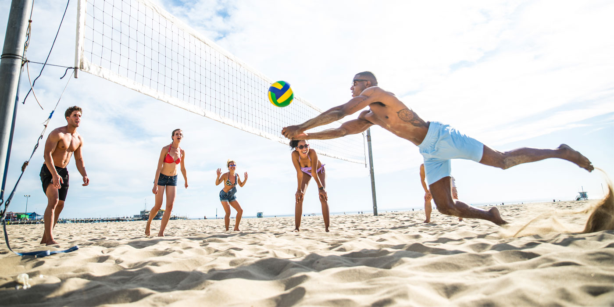

- Build a sandcastle:
Although it can be quite hard for beginners, building a sandcastle is one of the most enjoyable activities that people of all ages (especially kids) can do on the beach. Plus, it can be a great bonding moment with your family or friends, not to mention it can also put your creativity and skills to the test!
- Voleyball:
Beach volleyball is a sunny day beach classic and you and the kids can enjoy a few rounds of this game on a beautiful beach day. You’ll need at least two players to get a game of beach volleyball going, but if there are more people in your group it's even better. If you’ve got a really large group, you can even try a round of beach volleyball with adults versus kids!
- Surfing:
If you’ve tried surfing, you know it’s a demanding physical activity. But if you haven’t, don’t let that deter you from trying it out. Although it’s difficult and requires proficiency in swimming, there’s no substitute for it—especially the feeling of catching a wave. Book a surf lesson if you’re interested, they’ll help you catch your first wave. Then you can say you surfed! Even if you spend most of the time floating around and trying to maintain it as you sit on the surfboard.

- Fly kite:
Beaches usually have some wind going on, making them an ideal location for kite flying. Find a length of beach that’s not so crowded, in case you need to run to get it started or it dives for a crash landing.
- Fishing:
Fishing is one of the most relaxing things that you can do at the beach and something people have been doing for centuries. It's something that you can focus on or just leave in the backdrop—your choice. The best part is, you might catch your dinner!
- Dig a hole:
Whether the kids are competing to see who can hit wet sand first, or if they're making a swimming pool for the royal residents of the adjacent sand castle, digging a hole is a great way to pass the time.
- Picnic:
Bring along a picnic to the beach to make it through the afternoon. Sandwiches, crackers, and cheese, fruits, pretzels, candy, chips—anything you can think of really that’s easy to transport. You’ll have more options if you can bring your picnic in a cooler. Beware of seagulls– put away your food before you head back to the water.
- Identify seashell:
You can troll the beach looking for seashells and colored glass. Take photos of the best shells so that you can research them when you get home, or make some shell art on the sand and take a photo to remember it by. Please keep in mind that in some places, it's illegal to take shells from the beach, and it's often highly discouraged in places where it's still technically legal.
- Beach bonfire:
Beach bonfires are the best way to extend a beach trip into the night. Make sure to check the rules at your beach to confirm they allow bonfires. Some beaches include fire pits, although they often get claimed pretty quickly so make sure you get there early. Roast marshmallows, play some music, and enjoy the conversation. Bonfires are an easy way to get to know new people—maybe you want to invite a group of people you met on the beach to join in the fun.
- Snorkelling:
Discover the underwater world with the snorkelling excursions offered at the Atlantis. Dive into the Ambassador Lagoon and swim with the fish. Tickets cost AED 335 per person.

- Paint rocks:
If you’re planning a beach day with the kids, but you’re not necessarily going to swim, it helps to have some fun activities planned. One of these activities can be rock painting. You’ll have to plan ahead for this activity as you’ll need supplies such as brushes and acrylic paints. You can choose a beach theme, gather some rocks with the kids, and then settle in for some painting. Play around with form and color, and perhaps even try painting a sunset, sunrise, underwater scene, or something completely abstract.